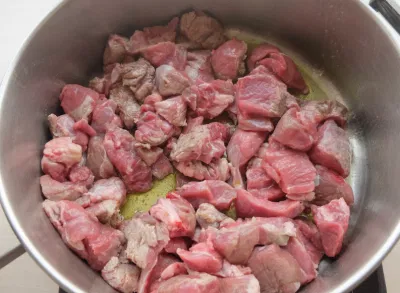
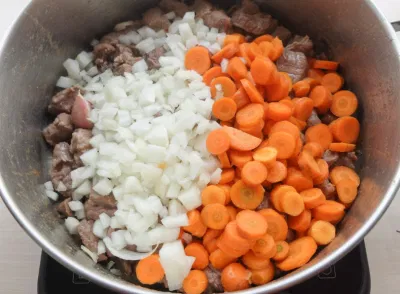
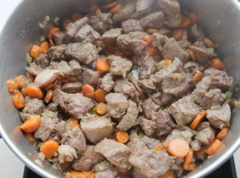
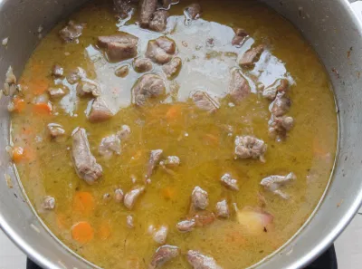
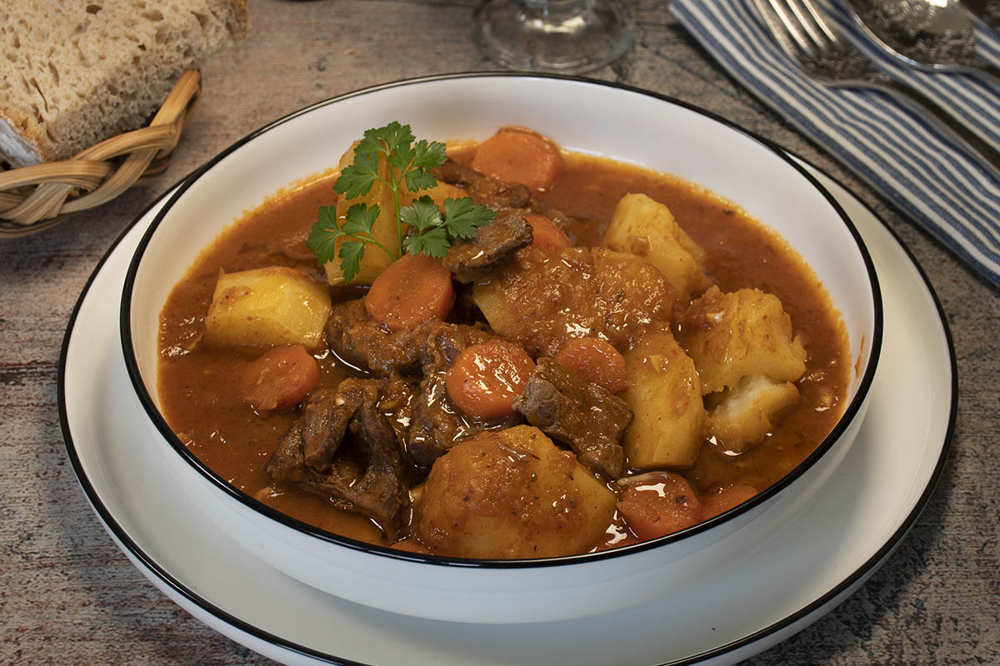

Guiso de ternera estofada
- Comenzamos limpiando la carne para eliminar restos de grasa y piel. La troceamos en dados de unos 2 o 3 centímetros, en dados más o menos iguales. Calentamos un chorrito de aceite de oliva virgen extra en una cazuela grande y añadimos la carne. La doramos a temperatura fuerte hasta que quede sellada por toda su superficie. Siempre removiendo y dándole vueltas para que se cocine por todos los lados.

- Agregamos las zanahorias cortadas en rodajas finas y la cebolla cortada en daditos. Incorporamos también los dientes de ajo y el tomillo. Continuamos sofriendo las verduras y la carne a temperatura media unos 15 minutos.

- Salpimentamos y añadimos el vino blanco. Dejamos que se cocine durante unos minutos para que el vino evapore su alcohol.

- Cubrimos todos los ingredientes con agua (que tenga como un dedo más de agua por encima de los ingredientes) y tapamos la cazuela. Cocinamos a temperatura media durante 1 hora a fuego medio. Pasado este tiempo, destapamos la cazuela y seguimos la cocción 45 minutos más a temperatura media-baja.

- Servimos la carne acompañada de unas patatas fritas en dados o con un poco de arroz blanco.
